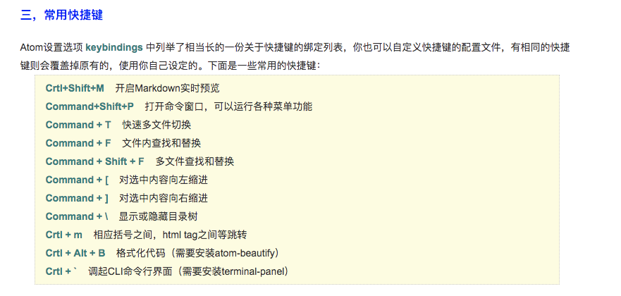
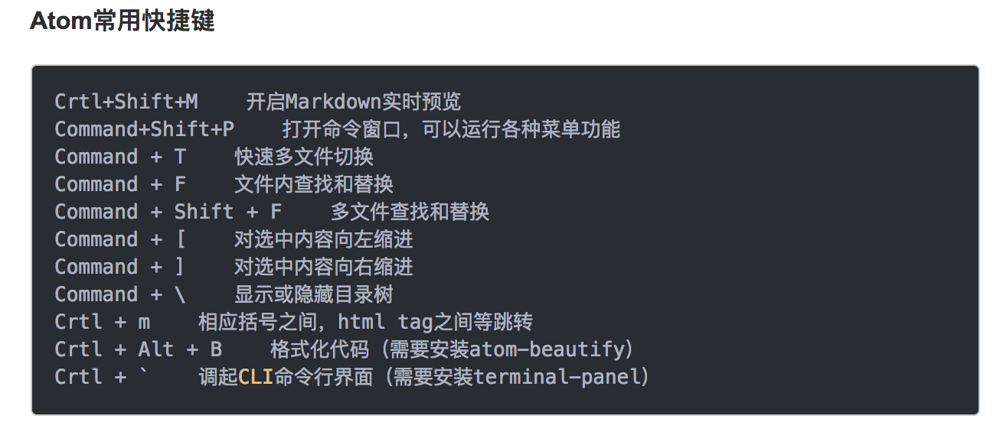

markdown 快捷键


"shift-cmd-K": "markdown-writer:insert-link"
"shift-cmd-I": "markdown-writer:insert-image"
"shift-cmd-X": "markdown-writer:toggle-taskdone"
"cmd-i": "markdown-writer:toggle-italic-text"
"cmd-b": "markdown-writer:toggle-bold-text"
"cmd-'": "markdown-writer:toggle-code-text"
"cmd-k": "markdown-writer:toggle-keystroke-text"
"cmd-h": "markdown-writer:toggle-strikethrough-text"
'cmd->': "markdown-writer:toggle-blockquote"
'cmd-"': "markdown-writer:toggle-codeblock-text"
"ctrl-alt-1": "markdown-writer:toggle-h1"
"ctrl-alt-2": "markdown-writer:toggle-h2"
"ctrl-alt-3": "markdown-writer:toggle-h3"
"ctrl-alt-4": "markdown-writer:toggle-h4"
"ctrl-alt-5": "markdown-writer:toggle-h5"
"shift-cmd-O": "markdown-writer:toggle-ol"
"shift-cmd-U": "markdown-writer:toggle-ul"
"cmd-j cmd-p": "markdown-writer:jump-to-previous-heading"
"cmd-j cmd-n": "markdown-writer:jump-to-next-heading"
"cmd-j cmd-d": "markdown-writer:jump-to-reference-definition"
"cmd-j cmd-t": "markdown-writer:jump-to-next-table-cell"
()
插入图片快捷键 ctrl + shift + v
预览快捷键 ctrl + shift + m